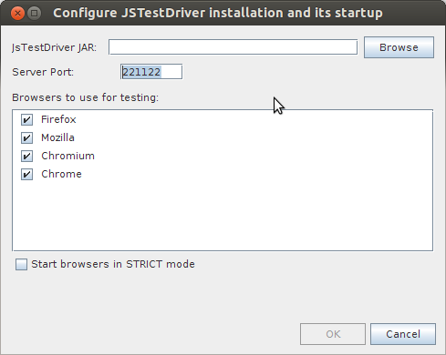

NetBeans Testing App
NetBeans 7.3
Running JavaScript tests - js-test-driver support
Trivia
- Download js-test-driver from http://code.google.com/p/js-test-driver/downloads/list
- js-test-driver need (by default) jsTestDriver.conf. NetBeans expect this file to be in you configuration files
- this conf file can contain: list of files to be loaded, list of files to be excluded and other settings
- this application contains some test files and libraries in "tests" folder (extracted from AngularJS template). Tests as such are in "unit" folder (for Jasmine) and "qunit" (for QUnit)
Useful links:
Getting ready
- Task: Install js-test-driver
- Right click on your HTML/JavaScript project (or this application or create a new HTML/JavaScript application from AngularJS template that contains some tests) and select Test
- Similar dialog to the one above is opened, specify path to the jar file downloaded from here
- Modify port number and which browser to be run
- Confirm the dialog
- Result: New page/tab is opened in selected browsers with so called slave page. These are required and can contain useful information such as logging or information about failures. When all tests are finished, you can see results in NetBeans. Check output window and see 2 tabs: js-test-driver Server and Running JS unit tests. In Services window, there is a new node called "JS Test Driver".
- Task: Test configuration file
- In this project, expand Configuration Files node and open jsTestDriver.conf
- Result: Content of the file is colored, try to copy the content to some YAML file. Coloring should be identical (as for now, it is the same as Apache Configuration File)
- Task: Missing configuration file
- By default, the NetBeans uses jsTestDriver.conf located in your Configuration Files
- Rename this file
- Run tests
- Result: Test button is disabled and you cannot run test.
- Task: Change configuration file
- Not yet available. Once (if ever) it is, create new configuration file
- Run tests with selected configuration
- Result: Only tests from the new conf file were performed.
- Task: Change driver configuration
- Open Services window and right click on JS Test Driver
- Select Configure
- Result: Dialog similar to the one on top of this page is opened. Change some settings and run tests again to be sure that these changes are respected
- Task: Stop JS Test Driver
- Open Services window and right click on JS Test Driver
- Select Stop
- Result: The driver is stopped, icon is missing the green triangle and header of the "js-test-driver Server" output window is not bold. Slave page in browser is now gray. Try to start it again (see issue 217950)
- Task: Missing test files
- Open jsTestDriver.conf and add nonexisting path to be loaded, e.g. "- foo/unit/*.js"
- Run tests with selected configuration
- Result: Output|Running JS Unit tests shows stack trace that given file was not found
- Task: Logging in tests
- Run tests in this project or use e.g.
jstestdriver.console.log("\n =============", " START TEST");in your tests - Check Output|Running JS Unit tests
- Result: Output contains logging from test
- Run tests in this project or use e.g.
Using external JSTestDriver
NetBeans supports to run tests on external JSTestDriver "server". To test it, start JSTestDriver from command line (single line):
me@pc:sampleApp/config$ java -jar JsTestDriver.jar
--runnerMode DEBUG --config jsTestDriver_external.conf --port 9876
Now open http://localhost:9876 and click on Capture this browser
- Task: External JSTestDriver
- Go to Services window and right click on "JS Test Driver"
- Select Configure
- Enter the URL above and specify path to jstestdriver jar and select the captured browser
- Confirm the dialog
- Test project
- Result: Tests were executed as expected. If you go to Services window again, you can see that you cannot start/stop this external JS Test Driver from its context menu
Debugging unit tests
- Task: Debugging Unit Tests
- Open sampleApp/tests/unit/jasmine.js and add breakpoint to line 12 (with var calc)
- Select project node in Projects and click on Test
- Specify common parameters and as a browser add "Chrome with NetBeans JS Debugger"
- Confirm the dialog
- Test project
- Result: Tests are executed and code execution stops at the line breakpoint. From now on all common debugging features should be working. You can follow these instructions. Note that DOM breakpoints may not work
Jasmine
This application contains basic Jasmine tests. The configuration file is called
jsTestDriver_jasmine.confTo use it, remove the "_jasmine" part from its name and Test project
QUnit
This application contains basic QUnit tests. The configuration file is called
jsTestDriver_qunit.confTo use it, remove the "_qunit" part from its name and Test project.
IMPORTANT: test functions in TestCase have to start with "test"